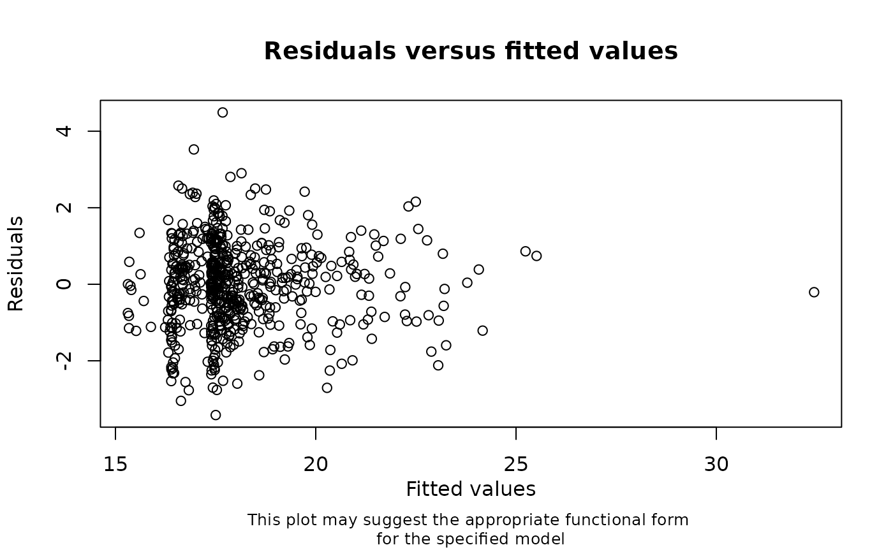

Performs not-at-random multiple imputation
doMNARMImice.RdCreates multiple imputations using mice. Imputations are based on the options and dataset specified by a call to proposeMI, and additionally on the specified missing not at random (MNAR) mechanism. If a substantive model is specified, also calculates the pooled estimates using pool.
Arguments
- mipropobj
An object of type 'miprop', created by a call to 'proposeMI'
- mnardep
The partially observed variable to be imputed under MNAR, specified as a string
- mnardelta
The desired sensitivity (delta) parameter as a function of other variables and values, specified as a string
- seed
An integer that is used to set the seed of the 'mice' call
- substmod
Optionally, a symbolic description of the substantive model to be fitted, specified as a string; if supplied, the model will be fitted to each imputed dataset and the results pooled
- message
If TRUE (the default), displays a message summarising the analysis that has been performed; use message = FALSE to suppress the message
Value
A 'mice' object of class 'mids' (the multiply imputed datasets). Optionally, a message summarising the analysis that has been performed.
Details
Imputation is performed using the NARFCS procedure (Tompsett et al, 2018) for the specified variable. See mice.impute.mnar.logreg for further details. All other partially observed variables are assumed to be missing at random (MAR) and imputed using the method(s) specified for the 'miprop' object.
References
Tompsett D, Leacy F, Moreno-Betancur M, Heron J, & White IR. 2018. On the use of the not-at-random fully conditional specification (NARFCS) procedure in practice. Statistics in Medicine. doi:10.1002/sim.7643
Examples
# First specify the imputation model as a 'mimod' object
## (suppressing the message)
mimod_bmi7 <- checkModSpec(formula="bmi7~matage+I(matage^2)+mated+pregsize",
family="gaussian(identity)",
data=bmi,
message=FALSE)

# Save the proposed 'mice' options as a 'miprop' object
## (suppressing the message)
miprop <- proposeMI(mimodobj=mimod_bmi7,
data=bmi,
message=FALSE,
plot = FALSE)
# Create the set of imputed datasets using the proposed 'mice' options and
# desired MNAR mechanism (decreasing imputed values of bmi7 by 2 units)
imp <- doMNARMImice(mipropobj=miprop, mnardep="bmi7", mnardelta="-2", seed=123)
#> Now you have created your multiply imputed datasets, you can perform
#> your analysis and pool the results using the 'mice' functions 'with()'
#> and 'pool()'
# Additionally, fit the substantive model to each imputed dataset and display
## the pooled results
doMNARMImice(mipropobj=miprop, mnardep="bmi7", mnardelta="-2", seed=123,
substmod="lm(bmi7 ~ matage + I(matage^2) + mated)")
#> Given the substantive model: lm(bmi7 ~ matage + I(matage^2) + mated)
#> with missing not at random sensitivity parameter = -2 for bmi7 ,
#> multiple imputation estimates are as follows:
#>
#> term estimate std.error statistic df p.value 2.5 %
#>
#> 1 (Intercept) 16.7882001 0.08651896 194.040705 387.6482 0.000000e+00 16.6180949
#>
#> 2 matage 1.1825973 0.06264847 18.876716 311.1946 1.658485e-53 1.0593292
#>
#> 3 I(matage^2) 0.8500215 0.03944057 21.551959 422.5477 4.835330e-70 0.7724973
#>
#> 4 mated1 -0.8969790 0.12801631 -7.006756 268.2499 1.968621e-11 -1.1490235
#>
#> 97.5 % conf.low conf.high
#>
#> 1 16.9583052 16.6180949 16.9583052
#>
#> 2 1.3058655 1.0593292 1.3058655
#>
#> 3 0.9275456 0.7724973 0.9275456
#>
#> 4 -0.6449345 -1.1490235 -0.6449345